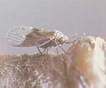
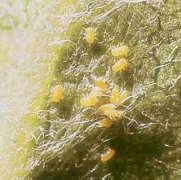

Körtelevélbolha
Psylla pyrisuga
Az egyik leggyakoribb levélbolhafélénk.
Kártételével kis- és nagyüzemekben egyaránt találkozhatunk. A 3-4 mm hosszú
imágó és lárva egyaránt károsít. Szívogatásuk eredményeként a körte levele és
hajtása meggörbül, deformálódik váladéka, a "mézharmat", ragacsos
váladékként borítja a növény felületés. Nyár vége felé a mézharmaton
megtelepedett feket színű korompenész már messziről felhívja a figyelmet a
kártételre. A károsodott fák törzse még télen is korompenésszel
szennyezett.Egynemzedékes, a telet lehullott lomb és egyéb növénymaradványok
védelme alatt töltik, tavasszal már márciusban petéznek. a korán kikelő lárvák
rügypattanáskor már károsítanak.
Védekezés:
- Kéregtisztogatás, a lehullott lomb megsemmisítése, rügypattanáskori
lemosó permetezés.
Ajánlott permetezőszerek:
Novenda, Báriumpoliszulfid, Gyümölcsfaolaj E (nyugalmi időszakban)
|  |